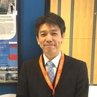

メンバー紹介
渡邉 洋輔
代表 / 神戸大学 特命政策研究職員
研究IR×生成AIに関心があります。
荻 多加之
/ 福島大学 URA
AIをうまく業務に活用します。
柴田 徹
/ 東京都立大学
URAがどのように変わるか興味があります。
森木 銀河
/ - URA
大学事務職員と生成AIのコミュニティを立ち上げ中です。

横田 秀和 認定URA
/ 東海大学
皆さん一緒に勉強しましょう！
安部 恵祐
/ 九州大学 URA
AIは『可能性』を計算できますが、それを『価値ある未来』へ変えられるのは、現場で伴走する皆様の実行力だけです。AIという追い風を味方につけて、研究の種を社会という未来へ着地させましょう。
安井 清峰
/ 一橋大学 URA
これから生成AIの利活用を進めます。
小林 健輔
/ 岡山大学 URA
学内に閉じたAIの利活用を進めています。